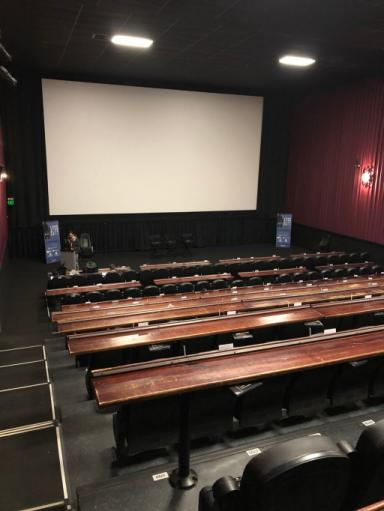

Lonestar Elixir 2020 Recap
Josh Vernon
March 13, 2020
Conference Info
- February 27-28, 2020
- Alamo Drafthouse South Lamar, Austin, TX


What is Elixir?
a dynamic, functional language designed for building scalable and maintainable applications
Terms
- Elixir: functional language based on Erlang with Ruby-ish syntax
- Erlang: functional language invented in the 80s at Ericsson
- BEAM: The VM that Erlang and Elixir run on
- OTP: The distribution that includes the BEAM runtime and associated applications and tools
Unique Elixir/OTP Features
- lightweight processes
- communication through message-passing
- supervision trees
- function heads and guards
What do people use it for?
- general backend powerhousing
- web development (Phoenix)
- embedded development (Nerves)
- lots of other cool stuff
How did I get into it?
- “Cloud-Native Software Architecture” talk at the May 2019 SADevs meetup
- 2nd edition of The Pragmatic Programmer by Dave Thomas and Andy Hunt
- it’s a functional language that’s not F# or Clojure
Top Soft Skills Talks
- Dave Thomas’s keynote
- Yeah…but should we?
- Getting the Frog out of the Well
- What I Learned About Code Review from Teaching 8th Grade Poetry
Top Tech Talks
- The Grand Bank of Jon Jon *Not FDIC Insured
- Tests: friend or foe? Chain or Cable?
- Why Your Next (or First) Hardware Project Should Be Built With Nerves
- Nobody:
Literally No One:
Me: Let’s Write CSS in Elixir!
Takeaways
- Real time is now
- Learn something new
- Do something new with something old
- Have fun!